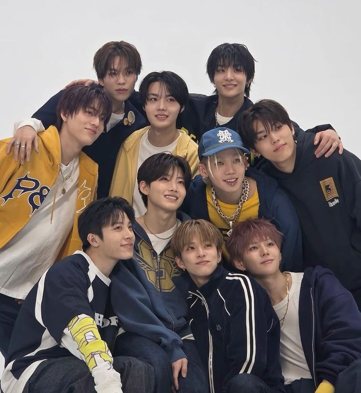
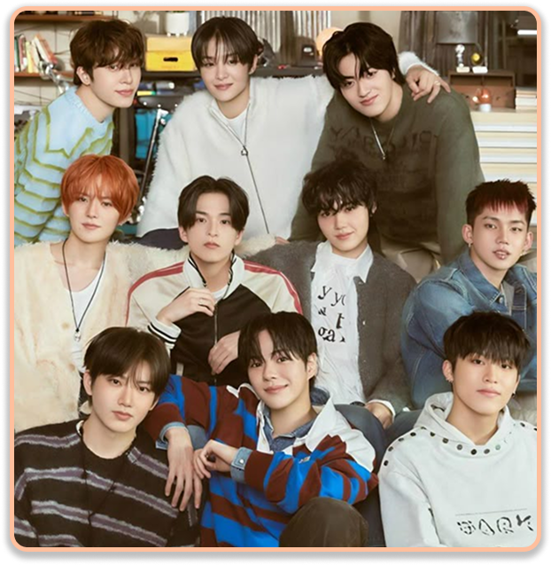

PLEASURE
Songs:
- YELLOW
- SARURU
- WHATEVER, WHENEVER
- LAST NIGHT
Pleasure is a special mini-album by TREASURE, released on March 7, 2025. This album was created as a "gift" to fans (Treasure Makers) to express gratitude for their love. This album focuses on a warm, nostalgic, and soft spring vibe. For this album, Asahi took a lead role in the title track "YELLOW." The rap line Choi Hyun-suk, Yoshi, and Haruto contributed lyrics to every single track on the album, ensuring the message felt personal to the group.
The title track, YELLOW, was composed and writing by Asahi. this song vibe was upbeat or Reminiscent of Spring. This song uses the colour yellow as a metaphor for a heart warmed by love for capturing the hope and fluttery excitement of a new beginning. Next, the second song, SARURU and the vibe was Bubbly / Pop-Rock. Saruru (사르르) describes something melting smoothly (like snow or cotton candy). The title is an onomatopoeia for something "melting softly." It describes the feeling of a frozen heart melting away as winter ends and spring arrives with a loved one.
WHATEVER, WHENEVER. This is the "soul" of the album. It's a slow-tempo track that focuses on the comfort of presence. The lyrics talk about how time becomes irrelevant when you're with the right person—where one day feels like a whole year because of how much you cherish it. This song vibe was Acoustic, sentimental, and intimate. And last but not least, LAST NIGHT was originally a digital single, its inclusion on this album acts as the "energy booster." This song has vibe high-energy, synth-driven dance-pop. The song about it captures the adrenaline of a night out and the desire to stay in a perfect moment forever.
The most discussed aspect of this album's production was Asahi's evolution as a composer. By taking the lead on "YELLOW," he moved TREASURE's sound toward a more melodic, indie-pop direction that resonated deeply with global fans.
PHOTOS

